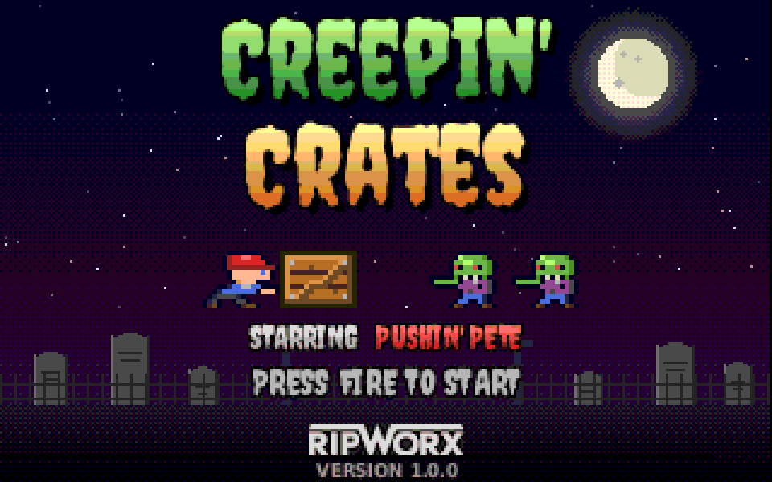
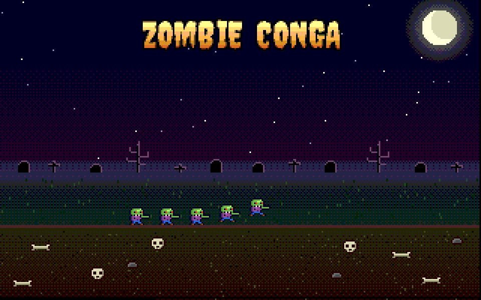
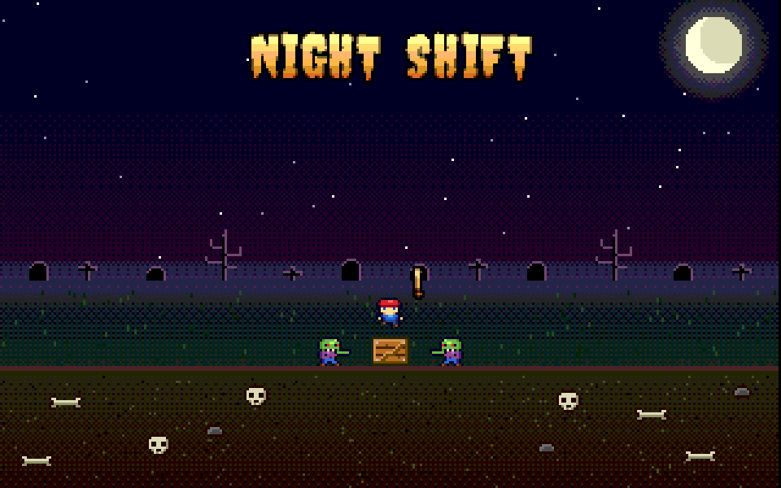
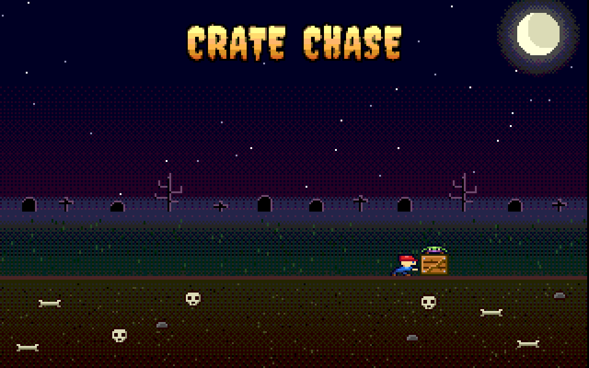
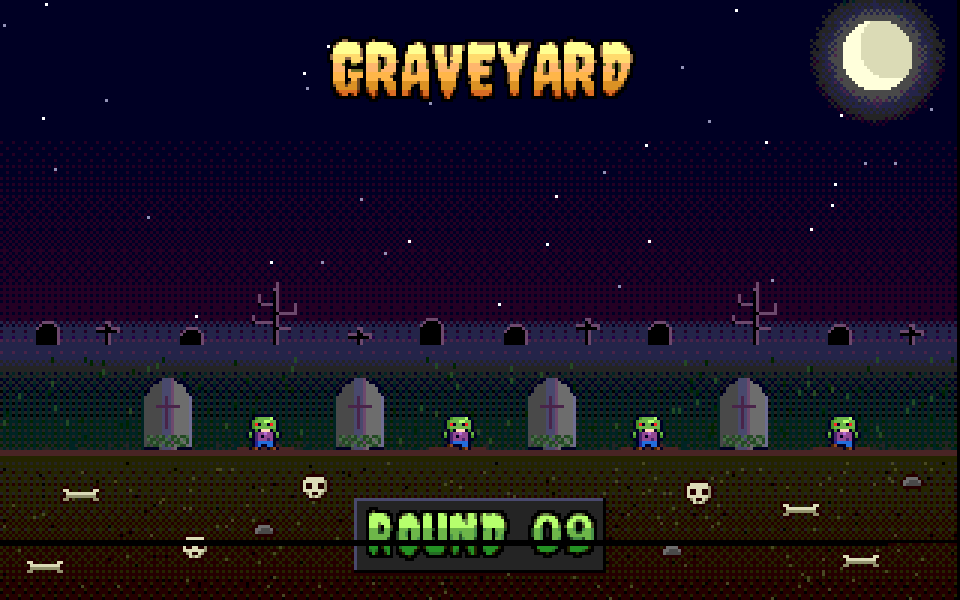
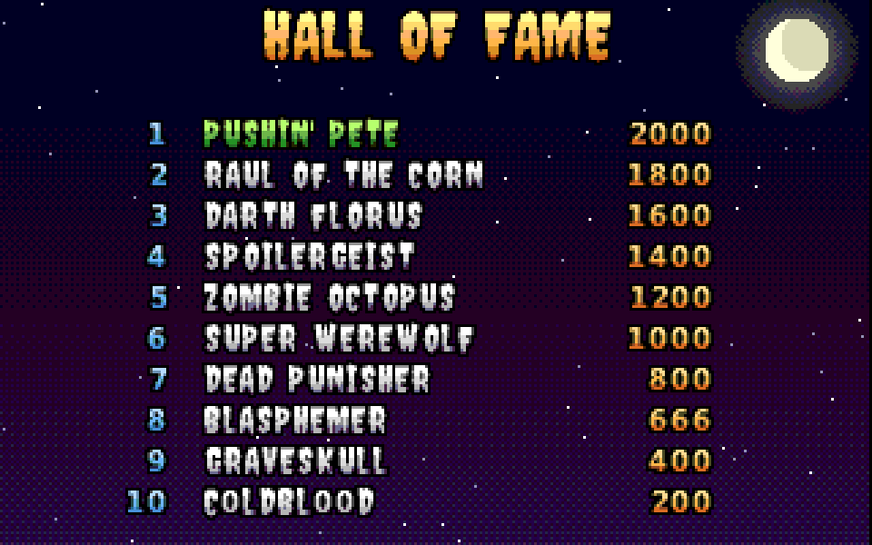

THE CRATE YARDEL DEPÓSITO DE CAJAS
Every night, when the moon comes up, the crates behind the old cemetery start to twitch, and out climb the zombies. Pushin' Pete can't fight them with his hands: push a crate and it slides until it hits something, squashing every zombie in its way.
Cada noche, cuando sale la luna, las cajas detrás del viejo cementerio empiezan a sacudirse, y de adentro salen los zombis. Pushin' Pete no puede pelear con las manos: empuja una caja y se desliza hasta chocar con algo, aplastando a cada zombi que encuentre en el camino.
On the ZX Spectrum Next, with hundreds of colors, characters that move pixel by pixel with hardware sprites, stereo music on three AY chips and the four scenes under the moon, with nothing left out.
En la ZX Spectrum Next, con cientos de colores, personajes que se mueven punto por punto con sprites por hardware, música en estéreo con tres chips AY y las cuatro escenas bajo la luna, sin recortar nada.

PLAYED ON THE REAL THINGJUGADO EN LA MÁQUINA REAL
Creepin' Crates was made with the ZEsarUX and CSpect emulators, and tested along the way on an Xberry Pi, a ZX Spectrum Next compatible, with every new version sent over WiFi. If you play it on yours, we'd love to hear how it goes. You'll find Carlos on Discord as czayas.
Creepin' Crates se hizo con los emuladores ZEsarUX y CSpect, y se fue probando en una Xberry Pi, una compatible con la ZX Spectrum Next, que recibía cada versión nueva por WiFi. Si lo juegas en la tuya, nos encantaría saber cómo te va. Encuentras a Carlos en Discord como czayas.
SCREENSPANTALLAS






DOWNLOADDESCARGA
Windows
Version 1.0.0 for Windows 10 and 11 (64-bit), a single file, nothing to install · 2.4 MBVersión 1.0.0 para Windows 10 y 11 (64 bits), un solo archivo, sin instalar nada · 2,4 MB
What's inside
Qué trae
- The game with a ZX Spectrum Next emulator (ZEsarUX) all set up: it starts by itself, in a window
- F11 for full screen and back
- W A S D or the arrow keys, or a USB gamepad
- El juego con un emulador de ZX Spectrum Next (ZEsarUX) ya preparado: arranca solo, en una ventana
- F11 para pantalla completa y volver
- W A S D o las flechas del teclado, o un gamepad USB
Instruction manual (PDF, 3.4 MB)
Manual de instrucciones (PDF, 3,4 MB)
Before you start
Antes de empezar
Windows may say the program comes from an "unknown publisher". Click More info and then Run anyway.
Windows puede avisar que el programa es de un "editor desconocido". Haz clic en Más información y después en Ejecutar de todos modos.
The Hall of Fame is saved in %APPDATA%\RIPworx, and it carries over to
the next version.
El salón de la fama se guarda en %APPDATA%\RIPworx y pasa solo a la
próxima versión.
Linux
Version 1.0.0 for 64-bit Linux (Ubuntu 24.04, Fedora 39, Debian 13 or newer) · 4.5 MBVersión 1.0.0 para Linux de 64 bits (Ubuntu 24.04, Fedora 39, Debian 13 o más nuevos) · 4,5 MB
What's inside
Qué trae
- The game with a ZX Spectrum Next emulator (ZEsarUX) all set up, in a single file
- F11 for full screen and back
- W A S D or the arrow keys, or a USB gamepad
- El juego con un emulador de ZX Spectrum Next (ZEsarUX) ya preparado, en un solo archivo
- F11 para pantalla completa y volver
- W A S D o las flechas del teclado, o un gamepad USB
Instruction manual (PDF, 3.4 MB)
Manual de instrucciones (PDF, 3,4 MB)
How to start it
Cómo abrirlo
Make it executable (right click, Properties, Permissions) and open it with a double click. The Hall of Fame is saved in your home folder, and it carries over to the next version.
Hazlo ejecutable (botón derecho, Propiedades, Permisos) y ábrelo con doble clic. El salón de la fama se guarda en tu carpeta personal y pasa solo a la próxima versión.
ZX Spectrum Next
Version 1.0.0 · 12.0 MBVersión 1.0.0 · 12,0 MB
What's inside
Qué trae
- The
CreepinCratesfolder withCRATES.NEX, ready for the SD card - The instruction manual in English and in Spanish, for the screen and for printing on A4 (PDF)
- La carpeta
CreepinCratesconCRATES.NEX, lista para la tarjeta SD - El manual de instrucciones en español y en inglés, para la pantalla y para imprimir en A4 (PDF)
What you need
Qué necesitas
A ZX Spectrum Next or a compatible machine (Xberry Pi, N-Go...) with NextZXOS, core 3.01.10 or later; 1 MB is enough. A Kempston joystick in either port, or just the keyboard. Or the ZEsarUX or CSpect emulators.
Una ZX Spectrum Next o una compatible (Xberry Pi, N-Go...) con NextZXOS, desde el core 3.01.10; alcanza con 1 MB. Un joystick Kempston en cualquier puerto, o solo el teclado. O los emuladores ZEsarUX o CSpect.
How to load it
Cómo cargarlo
Copy the CreepinCrates folder anywhere on the SD card. In the NextZXOS
Browser, go into the folder, choose CRATES.NEX and press ENTER. The Hall of Fame is
saved next to it, in CRATES.SAV.
Copia la carpeta CreepinCrates en cualquier lugar de la tarjeta SD. En el
navegador de NextZXOS (Browser), entra en la carpeta, elige CRATES.NEX y presiona
ENTER. El salón de la fama se guarda a su lado, en CRATES.SAV.
Share it
Compártelo
You may copy and share the zip and everything in it, free of charge and for non-commercial purposes, as is and crediting its authors: CC BY-NC-ND 4.0 license.
Puedes copiar y compartir el zip y todo lo que trae, gratis y sin fines comerciales, tal cual y diciendo quiénes son sus autores: licencia CC BY-NC-ND 4.0.
Checksums: SHA256SUMS · The Windows and Linux packages include the ZEsarUX emulator (GPL 3.0): licenses and source codeSumas de verificación: SHA256SUMS · Los paquetes de Windows y Linux traen el emulador ZEsarUX (GPL 3.0): licencias y código fuente
WHAT'S DIFFERENT FROM THE MEGA65QUÉ CAMBIA RESPECTO DE LA MEGA65
- The same game, screens and scenes as the MEGA65, centered on the Next's 320 x 256 screen.
- The MEGA65's music and effects on the Next's three AY chips, in stereo.
- SPACE, the fire button or 0 push the crates; the Next's DELETE key erases when you write your name.
- The Hall of Fame is saved on the SD card, next to the game, and shows the error number if it can't be saved.
- El mismo juego, las mismas pantallas y escenas que la MEGA65, centrados en la pantalla de 320 x 256 de la Next.
- La música y los efectos de la MEGA65 en los tres chips AY de la Next, en estéreo.
- ESPACIO, el botón o el 0 empujan las cajas; la tecla DELETE de la Next borra al escribir el nombre.
- El salón de la fama se guarda en la tarjeta, junto al juego, y muestra el número de error si no se puede grabar.